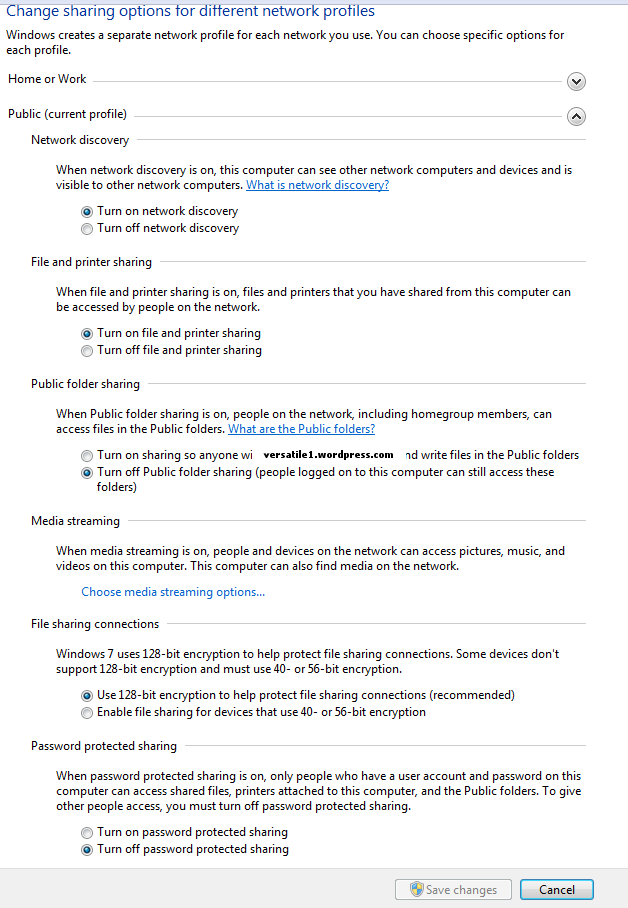

File sharing – Windows 7¶
Sharing your PS2 folder :
1. Right-click on the folder you want to share, then go to “Share
with” tab ;
2. Select “Specific people” ;
3. Choose “Everyone” and set properties for “Everyone” to
“read/write”.
Setting a share name :
4. Right click on your shared folder, and go to “Properties”, and then
“Sharing Tab” ;
5. Click on “Advanced Sharing” and then click on “Share this folder”.
6. Give share name the name PS2SMB (default name) – or any name you
want, but it must match into OPL network configuration. Click OK.
Setting your network profile :
7. Now click on “Network and Sharing Center”(blue link as shown in the picture above). Under the Public profile, please configure it as shown in the screenshot below :
